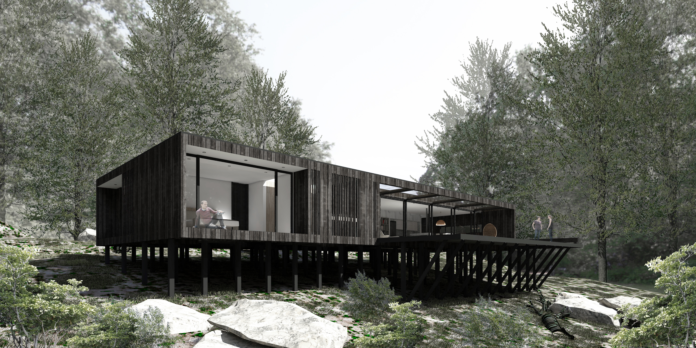
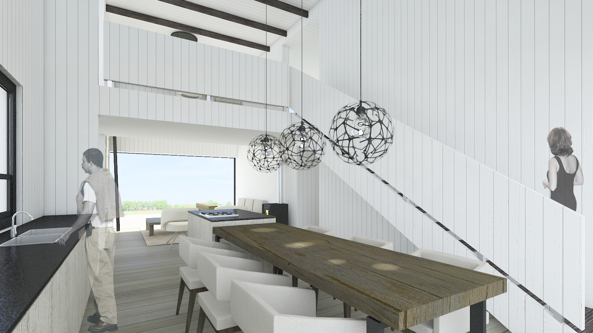

Proyecto: Casa Boyeruca
Año: 2020
Ubicación: Boyeruca, VI Región
Materialidad: Estructura en Panel SIP sobre pilotes de madera

Proyecto: Casa Quinquelles
Año: 2018
Ubicación: La Ballena, IV Región
Materialidad: Estructura en Panel SIP sobre pilotes de madera